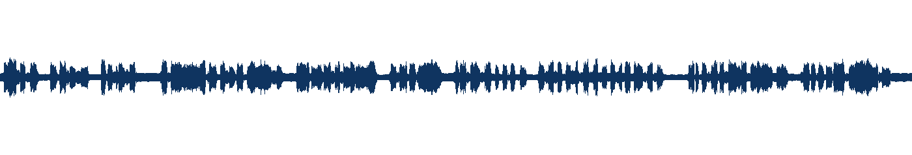
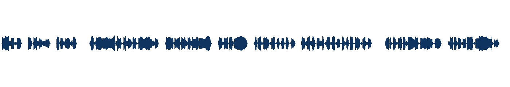
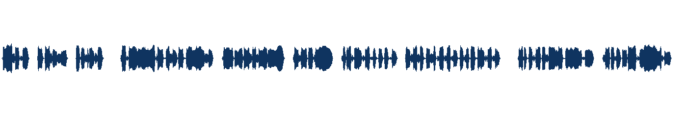

say 语音 + ffmpeg aevalsrc 和声垫），零网络。下方数字是 ffmpeg ebur128/astats 对成品的实测，不是设定值。
say 语音（实测 −18.4 LUFS，峰值 −2.9 dBFS，处理前不达标）；下：loudnorm 之后（−16.0 LUFS）。波形像素墨量反推的增益 2.48 dB 与音频实测 2.40 dB 相差 0.08 dB —— 跨介质对账。

| 成品 | 编解码 | 采样率 | 码率 | I (LUFS) | 目标 | True Peak | 峰值上限 | 判定 |
|---|---|---|---|---|---|---|---|---|
| podcast.mp3 | mp3 | 44100 | 192.6k | −16.20 | −16±0.5 | −1.80 | ≤ −1.0 | PASS |
| audiobook.mp3 | mp3 | 44100 | 192.6k | −20.30 | — | −5.80 | ≤ −3.0 | PASS |
| youtube.m4a | aac | 48000 | 191.3k | −14.20 | −14±0.5 | −1.50 | ≤ −1.5 | PASS |
| ACX 附加项 | 实测 | 技能规定 | 判定 |
|---|---|---|---|
| RMS level | −20.15 dB | −18 ~ −23 dB | PASS |
| Noise floor | −84.69 dBFS | ≤ −60 dB | PASS |
| 混音时长语义 | 24.243s = 语音长度（音乐 40s） | duration=first | PASS |
| LUFS 第二解析器 | 纯 Python BS.1770 = −16.23 / −14.24 / −15.98 | 与 ffmpeg ebur128 差 ≤0.05 LU | PASS |
verify.log；复现 python3 pipeline.py && python3 verify.py。